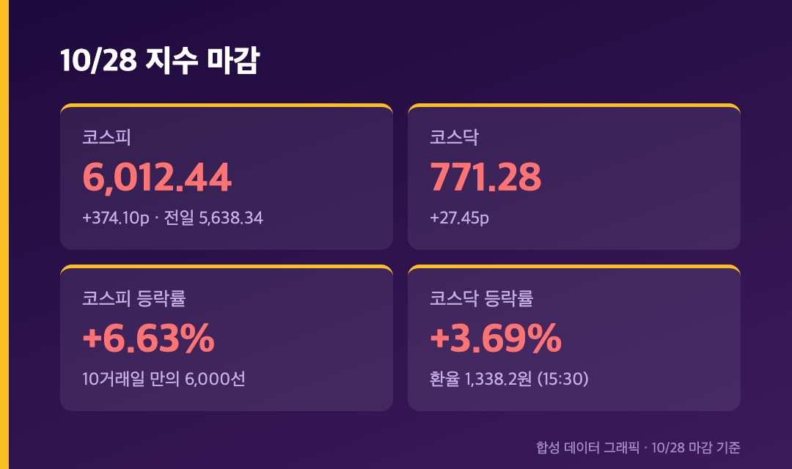
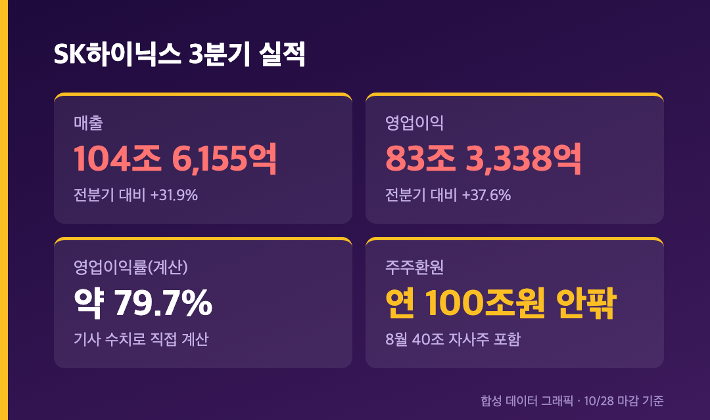
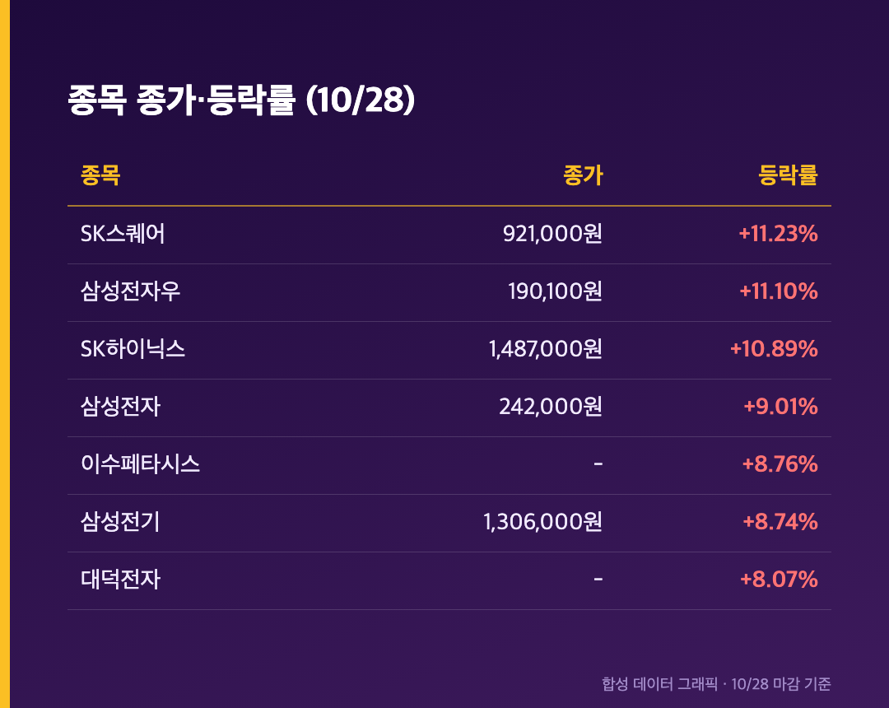
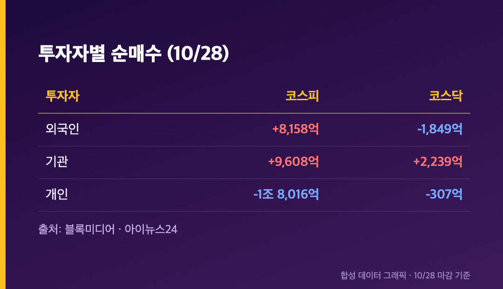
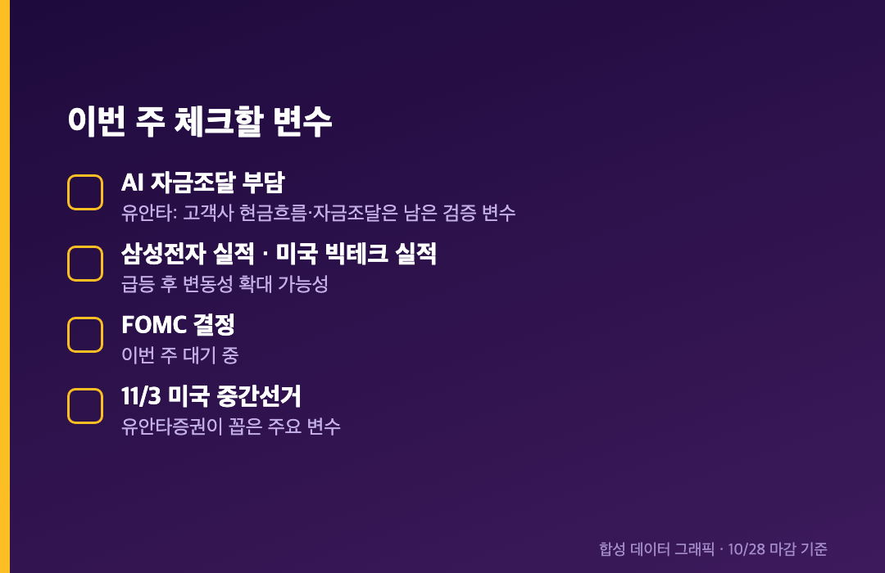

+6.63%. 오늘 코스피가 하루에 올라온 폭입니다. 이틀 전 5,469.47이던 지수가 6,012.44까지 왔어요.
오늘(10/28, 수)은 정상 개장일이었고, 아래 수치는 전부 오늘 마감 기준이에요. 종가로 6,000선을 되찾은 건 10거래일 만입니다.
🚀 코스피 +6.63% 6,012.44 – 10거래일 만에 6,000선 복귀
코스피 6,012.44 (+374.10포인트, +6.63%) / 코스닥 771.28 (+27.45포인트, +3.69%) |

코스피는 전일 5,638.34에서 출발해 374.10포인트 올랐고, 코스닥은 27.45포인트 오른 771.28에 마감했어요. 장중엔 한때 6,099.64까지 갔다는 보도도 있었는데(엠에스투데이, 낮 12시 46분 기준 스냅샷이라 종가는 아니에요), 마감은 6,000 살짝 위였습니다.
오전 9시 54분엔 코스피200 선물이 기준가 대비 5.17% 오르면서 매수 사이드카가 터졌어요. 어제에 이어 이틀 연속입니다. 원·달러 환율은 오후 3시 30분 기준 1,338.2원으로, 어제 1,323.7원보다 14.5원 올랐어요.
이틀 합치면 10/26 종가 5,469.47에서 약 +9.93%예요. 월요일에 7개월 만의 최저 종가라고 쓴 게 엊그제인데요.
🧠 왜 올랐나 – 장 시작 전 나온 SK하이닉스 실적 한 방

오늘 장 시작 전에 SK하이닉스가 3분기 실적을 냈어요. 매출 104조 6,155억원(전분기 대비 +31.9%), 영업이익 83조 3,338억원(+37.6%)으로 분기 기준 역대 최대입니다. 두 숫자로 계산해보면 영업이익률이 약 79.7%예요(기사에 직접 적힌 수치는 아니고 제가 나눠본 값). HBM과 고부가 서버 메모리가 끌었고, HBM4는 4분기부터 주력 제품이 될 걸로 보인다고 해요(엠에스투데이).
주주환원도 같이 나왔어요. 엠에스투데이는 올해 총 100조원 안팎의 주주환원 계획이라고 전했는데, 8월에 발표한 40조원 자사주 매입까지 포함한 연간 총액이라 전부 새로 정해진 건 아니라고 짚었어요. 블록미디어는 보통주 1주당 2만원 현금배당 포함 추가 주주환원 계획이라고 정리했고요. 소스마다 표현이 조금 달라서, 두 곳의 공통점인 "대규모 주주환원 계획이 나왔다"까지만 믿고 가려고 합니다.
대신증권 이경민 연구원은 "호실적과 장기공급계약 확대로 메모리 수요와 실적 성장 전망이 견고하다"고 봤고, 대규모 주주환원이 주가 하방을 받쳐줄 거라고 평가했어요.
📊 SK하이닉스 +10.89%, 삼성전자 +9.01% – 반도체 대형주가 지수를 끌고 갔어요

SK하이닉스는 148만 7,000원(+14만 6,000원), 삼성전자는 24만 2,000원(+2만원)으로 마감했어요. 삼성전자우 +11.10%, SK스퀘어 +11.23%였고, IT 하드웨어주도 삼성전기 +8.74%, 이수페타시스 +8.76%, 대덕전자 +8.07%로 같이 뛰었습니다.
어제 삼성전자 +4.23%, SK하이닉스 +5.18%였으니 이틀 누적은 대략 +13%, +16%예요(단순 곱 계산). 저는 삼성전자 25주를 들고 있는데, 25주 × 2만원이면 오늘 하루에만 평가액이 50만원 늘었네요. 매도 버튼은 안 눌렀고, 오늘은 앱도 자주 안 켜봤어요. 켜면 괜히 흔들릴 것 같아서요.
💸 수급 – 외국인·기관 동반 매수, 개인은 1조 8,016억원 던졌어요

코스피에서 외국인이 8,158억원, 기관이 9,608억원을 순매수했고 개인은 1조 8,016억원을 순매도했어요(블록미디어, 아이뉴스24). 외국인·기관 합산으로는 1조 7,766억원이라고 위키트리가 정리했는데, 위 두 숫자를 더한 값과 같습니다.
코스닥은 결이 달랐어요. 기관이 2,239억원 순매수한 반면 외국인은 1,849억원, 개인은 307억원 순매도였어요. 코스닥도 +3.69%로 올랐지만 외국인은 팔았다는 점은 기억해둘 만합니다.
⚠️ 그래도 조심할 점 – AI 자금조달 얘기는 아직 끝이 아니에요

오늘 상승의 한 축은 미국이에요. 현지시간 10/27 나스닥이 +1.18%, 필라델피아반도체지수가 +3.60%(3일 연속 상승)였고, 앤트로픽의 IPO 신청서가 공개되며 AI 수익화 우려가 누그러졌어요.
다만 엠에스투데이는 같은 날 나온 대규모 AI 금융 소식에 눈을 돌렸어요. 은행 컨소시엄이 SPV로 약 630억달러를 조달하고 브로드컴이 약 435억달러 잔존가치를 보증하는 딜, 메타의 조달 계획이 950억→975억달러로 늘어난 것, 엔비디아·AMD·브로드컴이 메타 공모에 합산 최대 50억달러를 낼 수 있다는 의향(확정은 아니라고 해요)까지요. 이렇게 큰 AI 금융이 대출기관과 반도체 공급사로 리스크를 퍼뜨릴 수 있다는 우려도 같이 적혀 있었습니다.
유안타증권 이재원 연구원은 "AI 고객사의 현금흐름과 자금조달 부담은 남은 검증 변수"라고 했고, 삼성전자와 미국 빅테크 실적, 다음 달 3일 미국 중간선거를 변수로 꼽았어요. 이번 주 FOMC 결정도 아직 남아 있고요.
마무리하며
코스피 6,012.44(+6.63%), 코스닥 771.28(+3.69%). 이틀 전 5,469에서 이틀 만에 +543포인트입니다.
월요일엔 빠지는 숫자를 적었고 오늘은 오르는 숫자를 적고 있는데, 제 계좌는 그대로 삼성전자 25주예요. 변한 건 지수뿐이라 괜히 어색합니다. 내일은 삼성전자 쪽 발표와 FOMC를 확인하고 정리할게요.
오늘은 조용히 마침표만 찍습니다.